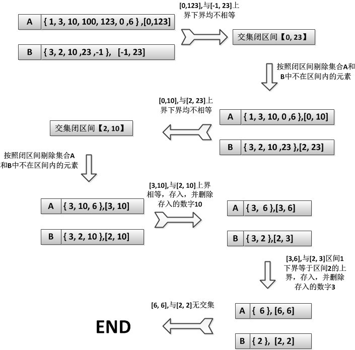

思路1：排序法
对集合A和集合B进行排序（升序，用快排，平均复杂度O(N*logN)），设置两个指 针p和q，同时指向集合A和集合B的最小值，不相等的话移动*p和*q中较小值的指针，相等的话同时移动指针p和q，并且记下相等的数字，为交集的元素之 一，依次操作，直到其中一个集合没有元素可比较为止。
优点：操作简单，容易实现。
缺点：使用的排序算法不当，会耗费大量的时间，比如对排好序的集合使用快排， 时间复杂度是O(N2)
思路2：索引法
以空间换时间，把集合(感谢网友的指正，集合里面的元素是不重复的！)中的元素作为数组下表的索引。来看例子：
A= {1 ,12, 13, 25}，那Asub[1] = 3,Asub[12] = 1 ,Asub[13] = 1 ,Asub[25] = 1 ;
B=｛1, 2, 3, 15 ,｝那Bsub[1] = 1; Bsub[2] = 1; Bsub[3] = 1; Bsub[15] = 1;
对元素少的集合扫一遍，发现Asub[1] = 3 和Bsub[1] = 1有相同的索引1，并且重复度为1，所以交集肯定包括{1, 1}; Bsub[2] = 1而Asub[2] = 0，表示无交集，依次类推，可以得到集合A和B的交集。
假设集合中存在负数，可以把集合分成正整数和负整数（加个负号变正整数）两部分，解法同上！
优点：速度快，时间复杂度O(N)
缺点：空间消耗大，以空间换取时间
这是我看到题目第一个想到的算法，再来想到排序法，而集合压缩是有感而发的，索引法的缺点是空间消耗多，原因是可能索引值太大，要申请很多的不必要的空间，这个缺点也是有克服的方法的，就是采用哈希查找，找到一个比较合适的哈希函数，把索引的值减小了，从而减少消耗的内存空间。比如哈希函数为f(x) = (x + MOD) % MOD （除留余数法，MOD为常数），还有平方取中法、折叠法等方法，然而，无论哈希函数设计有多么精细，都会产生冲突现象，也就是2个关键字处理函数的结果映射在了同一位置上，因此，有一些方法可以避免冲突。这里没有仔细钻研，只提供一些思路，有兴趣的朋友可以继续研究。
思路3：集合压缩
对于一个集合来说，我们很容易就可以得到集合的最大值和最小值，假设集合A的最大值和最 小值分别为MaxInA，MinInA；假设集合B的最大值和最小值分别为MaxInB，MinInB；那么集合A的所有元素一定在闭区间 【MinInA, MaxInA】里面，集合B的所有元素一定在闭区间【MinInB, MaxInB】里面，从这两个集合里面我们可以作如下判断：（集 合A和集合B都在链表中！此算法使用链表结构，操作起来比数组更方便）
1. 若MinInA == MinInB或者MaxInA == MaxInB，那么MinInA 或者MaxInA （相等的那个数）就一定在交集里面，存入交集（可以用数组存），删除链表中相应的结点；若不想等则跳到第3步；
2. 重新找到集合A和B中的最大值和最小值MinInA 、MaxInA 、MinInB、MaxInB；跳回第1步；
3. 更新区间（交集的区间），区间的更新如下：区 间下界为Lower = max(MinInA, MinInB)，上届为Upper = min(MaxInA , MaxInB)，那么剩下的交集一定在闭区间【Lower ,Upper】里面，按照这个区间来剔除掉集合A和集合B中不符合条件的元素，剔除结束后，若其中一个集合为空，跳到第4步，否则返回第2步；
4. 程序结束，退出！
这种适用于集合里面数值比较散乱，最大值最小值差值比较大的情况！算法的思想在于不断减小搜索的范围，时间的消耗主要在查找集合的最大值和最小值上，我们来看一个例子，集合A= {1, 3, 10, 100, 123, 0, 6} ,B = {3, 2, 10, 23, -1},
集合A的闭区间【0， 123】，集合B的区间【-1，23】,交集的闭区间就为【0，23】，按照这个区间，剔除集合A中的｛ 100, 123｝，剔除集合B的｛-1｝，集合A=｛1, 3, 10, 0, 6｝集合B=｛3, 2, 10, 23｝，没有相等的，继续缩小范围，为【2，10】，这时MaxInA == MaxInB，满足条件，把10存入交集数组中，剔除两个集合的结点；集合变为A= ｛3，6｝集合B={3}，满足MinInA == MinInB或者MaxInA == MaxInB，把3存入交集数组中，集合B为空，结束！如图：

对于第三个方法，我只是把算法的思想做了一下总结，并没有编写代码运行调试并与其他算法做比较！比较过的朋友，欢迎告知三种算法的优劣性！